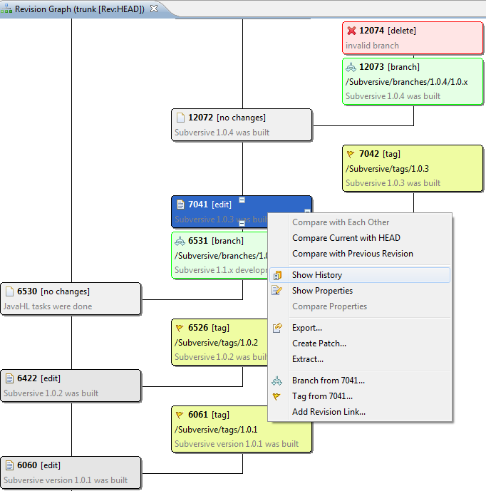

SVN Revision Graph
'SVN Revision Graph' is a graphical representation of history for any resource. Using Revision Graph we can see a resource history with copy operation, applied for this resource. Represented information includes information about branches and tags for resource, so it allows to see a revision history for a resource and all its branches and tags. It's a main advantage of the Revision Graph over a History View, because History View is able to display only a history for resource, but not its copies. As the result Revision Graph is very useful in case if branches and tags are used, so users can see the whole picture of resource changes together with all branches and tags, where it was used on the one screen.
Revision Graph features:
- Displaying of the revision graph for resource
- Switching between compact and full data representation (In compact view revision with no copy operations are filtered out. Full data representation displays all revisions)
- Supported actions for displayed revisions: compare revisions, show content, export content, display history and other operations, available for History View (the same list of actions is available in the revision Graph)
- Graph zooming and thubnailing in Outline view
- Expanding/collapsing revisions
This is how 'SVN Revision Graph' looks like:

Toolbar
Refresh - contacts SVN repository and updates revision graph.
Show Only Revisions with Copies - filter out revisions which have modifications but don't have copies.
Zoom - allows to change zooming.
Pop-up menu
Open/Open With - opens the resource of current selected revision.
Compare with Each Other - compares to selected revisions of the resource.
Compare Current with HEAD - compares selected resource to HEAD.
Compare with Previous Revision - compares selected resource to previous revision.
Show History - shows SVN History View for a selected resource.
Show Properties - shows SVN Properties View for a selected resource.
Compare Properties - compare properties to selected revisions of the resource.
Show Annotation... - shows SVN Annotations View for a selected resource.
Export... - exports a selected resource to a local folder.
Create Patch... - creates a patch from a selected resource in compare with another URL or revision.
Extract... - extract a selected resource to a local folder.
Branch from - creates a branch from a selected revision.
Tag from - creates a tag from a selected revision.
Add Revision Link... - creates a revision link and adds it to a revisions folder.

Revision Graph
SVN Repository Exploring Perspective